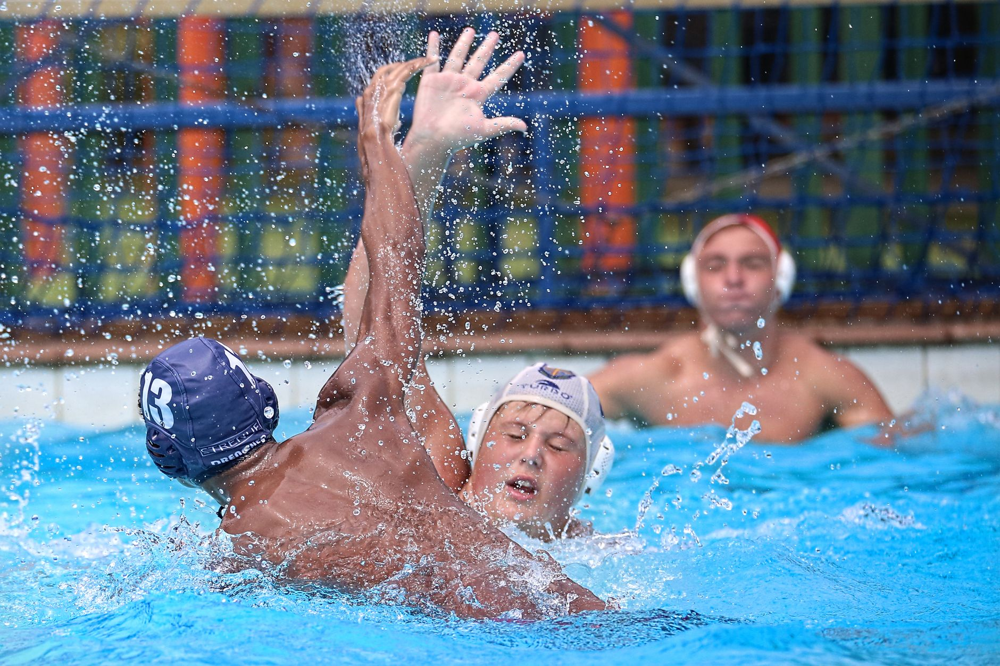

A Milestone Moment for Youth Water Polo in the United States
USA Water Polo recently announced the roster for the USA Women's Youth National Team, which will compete at the upcoming World Aquatics U18 Water Polo Championships. This announcement is more than a list of names — it is a testament to what years of dedication, rigorous training, and a love for the sport can ultimately produce. For young athletes in Wesley Chapel, Land O' Lakes, and across the Tampa Bay area, this kind of news should feel both exciting and deeply motivating.
Every player on that national roster started exactly where many local young athletes are right now: learning the fundamentals, building endurance in the pool, and developing the teamwork skills that water polo demands at every level of competition.
Why Moments Like This Matter for Youth Athletes
When young players see peers their own age representing the United States on an international stage, it makes the dream feel real and achievable. The U18 age group is a critical window in an athlete's development — it is the period when technical skills sharpen, competitive instincts deepen, and athletes begin to understand what it truly takes to perform under pressure.
Parents of young water polo players often wonder whether their child has what it takes to reach higher levels of competition. The answer almost always comes down to consistent, quality training and an environment that challenges athletes to grow. Exposure to elite-level competition early — even just watching and studying it — helps young players set their own benchmarks and raise their personal expectations.
What It Takes to Reach the National Level
The athletes selected for the USA Women's U18 roster did not arrive at this moment by accident. Their journeys were shaped by several key factors that any aspiring water polo player can begin building today:
- Technical skill development: Mastering passing, shooting, defensive positioning, and eggbeater kick is foundational to advancing at any competitive level.
- Physical conditioning: Water polo demands exceptional cardiovascular fitness, upper-body strength, and explosive speed — all of which require structured, progressive training.
- Game IQ: Understanding team systems, reading opponents, and making smart decisions under fatigue separates good players from elite ones.
- Mental resilience: Competing at the club and national level requires young athletes to manage pressure, handle setbacks, and stay focused on long-term goals.
- Consistent commitment: Showing up — to practice, to film review, to strength training — builds the habits that eventually produce breakthrough performances.
How Local Programs Play a Critical Role
The pipeline to national team competition runs directly through strong local and club programs. At Nexar Aquatic Academy, based in Wesley Chapel and Land O' Lakes, young athletes are trained in an environment designed to build exactly these kinds of habits and skills. Quality coaching, structured programs, and a team-first culture give players the foundation they need to pursue water polo at the highest levels they are capable of reaching.
Programs like ours in the Tampa Bay area are where national-level dreams are first nurtured. Every drill, every scrimmage, and every challenging practice session is a step toward something larger — whether that means making a high school varsity roster, earning a college scholarship, or one day hearing your name called for a national team announcement.
Be Inspired — Then Get to Work
The USA Women's U18 Water Polo Championships roster is a celebration of what is possible in this sport. At Nexar Aquatic Academy, we encourage every young athlete and every supportive parent in the Wesley Chapel and Land O' Lakes community to use this moment as fuel. Read about these young women, watch the competition, and then bring that energy into the pool.
The path to representing your country begins with a single practice. Make the most of the one in front of you.
Ready to get in the water?
First practice is completely FREE — no commitment needed.